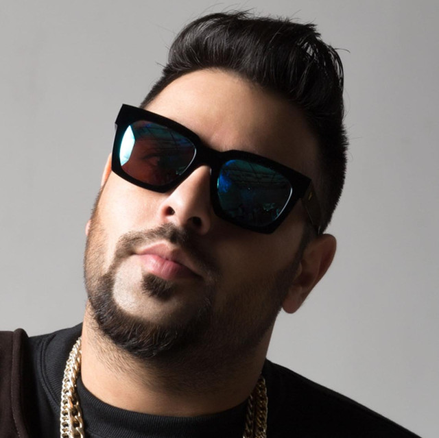

Badshah
About Artist
Aditya Prateek Singh Sisodia, better known by his stage name Badshah, is an Indian rap-music composer rapper and co-singer known for his Hindi, Haryanvi, and Punjabi songs. He started his career in 2006 alongside Yo Yo Honey Singh in his Group Band Mafia Mundeer and gained spontaneous popularity among youth. He split from Honey in 2012 and gained fame with his independent Haryanvi song Kar Gayi Chull, which was later adopted into the 2016 Bollywood movie, Kapoor & Sons. His music has been featured in Bollywood soundtracks for films such as 2014 films Humpty Sharma Ki Dulhania and Khoobsurat.
He has also collaborated with artists such as Gippy Grewal, Diljit Dosanjh, Manj Musik, Raftaar, Navv Inder and Aastha Gill among others. His debut single, "DJ Waley Babu" featuring Aastha Gill, was ranked number one on Indian i-tunes charts within 24 hours of the release. The song also crossed a million views on YouTube within 30 hours. In 2016, he collaborated with Navv Inder on Wakhra Swag which won the 2016 Punjabi Music Awards for best duo/group and most popular song of the year award.
He completed his schooling from Bal Bharati Public School, Pitampura, Delhi where he used to perform on his school choir. Prior to becoming a full-time musician he received education to become a engineer from St Stephens college new delhi during which he was exposed to new Punjabi music which promoted him to take on rap writing. He has stated that if he had not become a rapper, he may "have been an IAS officer" .